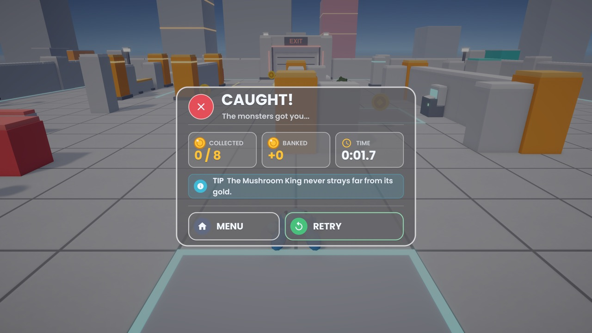

GOLD RUSH · Phase 9
Gameplay UI
Until now the game talked to you in the Console. In this phase you build the in-game UI as normal GameObjects in Level1, just like the menu: the HUD (gold, hearts, timer, day/night and pause buttons, power-up bars, arrow, messages), the level intro with the 3-2-1-GO countdown, and the PAUSE, LEVEL COMPLETE and CAUGHT dialogs. You also switch to the final GameManager, which fills in all the numbers.
1What you need
- Phase 8 is finished: coins, the exit gate, monsters and power-ups work, and the Console tells you what happens.
If you start here, import
GoldRush_Phase08_PowerUps.unitypackage(and addMainMenuandLevel1to File → Build Profiles → Scene List again). - The glass prefabs you made in phases 1 and 2:
Prefabs/UI/GlassPill,GlassCircleandChipButton. You use them a lot on this page. - The Resources pack folders
Scripts/Helpers/andScripts/Final/. - Open the scene
Assets/GoldRush/Scenes/Level1.unity. In the Game view, pick the aspect Full HD (1920x1080).
This is what you build. Every picture is the real game:
 HUD
HUD PAUSE
PAUSE LEVEL COMPLETE
LEVEL COMPLETE
CAUGHTNew or changed files in this phase:
File (in Assets/GoldRush/Scripts/) | Type or import? | What it does |
|---|---|---|
UI/GameUI.cs | Import (new) | Fills the HUD and the dialogs with numbers and plays their animations. |
UI/GameAction.cs | Type (new) | Put it on a dialog button: MENU, RETRY, RESUME, NEXT. |
UI/VirtualJoystick.cs, UI/TouchLookArea.cs | Import (replace the short phase-4 files) | Touch controls. GameUI needs the real files. You place them in phase 10. |
World/LevelBuilder.cs, World/Props.cs | Import (new) | Build a level from code (the Daily Rush in phase 10). |
World/DayNightTint.cs, World/DayNightPalette.cs | Import (new) | Day and night colours for materials (used in phase 10). |
World/Coin.cs, World/ExitGate.cs, World/PowerUp.cs | Import (replace) | The final files. They can also build themselves from code. |
Gameplay/GameManager.cs | Import (replace) | The final GameManager: it talks to the GameUI. |
2Copy the new and final scripts
These files are long, so you copy them. Their code is the real code of the finished game.
- In Finder or Explorer, open the Resources pack and your project folder side by side.
- Copy each file in the table into the folder in the last column. Copy the files, not whole folders.
- When the computer asks, click Replace.
| File | Copy from (Resources pack) | To (your project) |
|---|---|---|
GameUI.cs, VirtualJoystick.cs, TouchLookArea.cs | Scripts/Helpers/UI/ | Assets/GoldRush/Scripts/UI/ |
LevelBuilder.cs, Props.cs, DayNightTint.cs, DayNightPalette.cs, Coin.cs, ExitGate.cs | Scripts/Helpers/World/ | Assets/GoldRush/Scripts/World/ |
PowerUp.cs | Scripts/Final/World/ | Assets/GoldRush/Scripts/World/ |
GameManager.cs | Scripts/Final/Gameplay/ | Assets/GoldRush/Scripts/Gameplay/ |
.meta files in it). Without its .meta file, every script in your scenes and prefabs goes missing. Copy only the .cs files.Go back to Unity. You see one red error: The type or namespace name 'GameAction' could not be found. That is fine: you type GameAction in the next step.
The replaced Coin, ExitGate and PowerUp have the same Inspector fields as your phase versions, so your prefabs keep their values. The new files add a Create() function: with it, the game can also build a coin, gate or power-up from code.
3Script: GameAction
A dialog button needs to tell the GameManager what to do. GameAction works like MenuAction in the menu: you type the action name in the Inspector.
- In
Assets/GoldRush/Scripts/UI/, create the scriptGameActionand type this code:
Assets/GoldRush/Scripts/UI/GameAction.cs
using UnityEngine;
using UnityEngine.UI;
namespace GoldRush
{
/// <summary>
/// Put this on a Button in the game UI and type its action: "pause", "resume", "retry", "menu" or "next".
/// When clicked it plays the click sound and calls GameManager.Run(action).
/// (Like MenuAction for the main menu.)
/// </summary>
[RequireComponent(typeof(Button))]
public class GameAction : MonoBehaviour
{
public string action = "resume";
void Awake()
{
GetComponent<Button>().onClick.AddListener(() =>
{
AudioFX.Play("click");
if (GameManager.I) GameManager.I.Run(action);
});
}
}
}[RequireComponent(typeof(Button))]: Unity adds a Button if the object has none.onClick.AddListener(...)connects the click in code, so you don't set up On Click () in the Inspector.GameManager.I.Run(action)is in the final GameManager:"resume"plays on,"retry"loads the level again,"menu"goes back to the main menu,"next"loads the next level.
Save. The Console must now show no red errors.
4What the final GameManager adds
The new GameManager does the same as your phase 8 version, but it shows everything on screen instead of in the Console. You don't need to change it. When the level starts, it looks for a GameUI in the scene and calls UI.Bind(this). These are the calls it makes:
| When | GameManager calls | You see |
|---|---|---|
| Level start | UI.Bind(this), UI.SetCoins, UI.SetLives | The HUD drops in from the top. 0 / 6 and two hearts. |
| Intro | UI.Intro(Def, 1), then UI.ShowControlsHint() | LEVEL 1 · TRAINING YARD, then 3 – 2 – 1 – GO!, then the controls hint. |
| Coin | UI.FlyCoin, UI.Markers.FloatText("+1") | A coin flies to the counter, a "+1" rises. |
| Power-up, last coin, hit | UI.Toast(title, text, colour), UI.Flash | A message at the top, a red flash when you get hit. |
| Power-ups, monsters, gate | UI.AddPowerUpLabel, UI.Markers, UI.AddGateLabel | SPEED / GHOST / MAGNET labels, the "!" bubbles over monsters, the green EXIT label. |
| Esc / P or the pause button | Pause() → UI.ShowPause() | The PAUSED dialog. The game stops (Time.timeScale = 0). |
| Win / lose | UI.ShowWin(result), UI.ShowLose(result) | LEVEL COMPLETE with stars, or CAUGHT with a tip. |
| Dialog button | Run("menu" | "retry" | "resume" | "next") | Main menu, the level again, play on, the next level. |
The Console messages are gone. If there is no GameUI in the scene, the GameManager builds one from code (GameUI.Create). You build your own now, so you can see and change every part.
Bind(), GameUI hides the dialogs and connects the pause button and the MUSIC/SOUND toggles. If its Hud field is empty, it builds a whole new UI from code instead.5The GameUI canvas and its layers
- Create: Empty = right-click the parent → Create Empty. Image = right-click → UI → Image. Text = right-click → UI → Legacy → Text. Rename it at once.
- stretch 0: hold Alt and click the bottom-right anchor preset; Left, Bottom, Right, Top = 0. stretch L B R T = 76, 0, 8, 0: type Left 76, Bottom 0, Right 8, Top 0.
- top left, pivot 0, 1: click that anchor preset with Shift held. If the pivot is different, type it.
- Colour F2F7FF · 230: Hexadecimal F2F7FF, A (alpha) 230. No number = 255.
- Images: sprites from
Resources/UISpritesandResources/Icons. Untick Raycast Target unless the table says raycast.pill,pillo,rrandrro2are Sliced: then type the PPU (Pixels Per Unit Multiplier). Icon Glyphs: tick Preserve Aspect. - Texts: fonts from
Resources/Fonts. Untick Raycast Target. Horizontal and Vertical Overflow = Overflow, unless the table says Best Fit. Outline or Shadow = Add Component → UI → Effects, colour050A1F · 115.
- GameObject → UI → Canvas. Name it
GameUI. (Unity also adds anEventSystem. Keep it.) - Canvas: Render Mode Screen Space - Overlay, Sort Order 10.
- Canvas Scaler: UI Scale Mode Scale With Screen Size, Reference Resolution 1920 × 1080, Match 0.5.
- Add Component → Game UI. Leave all its fields empty for now.
- Add four children to
GameUI, in this order:
| Object (parent) | Create | Rect | Look | Other |
|---|---|---|---|---|
WorldMarkers (GameUI) | Empty | stretch 0 | – | Add Component → World Markers. Drag WorldMarkers itself into its Root field. |
HUD (GameUI) | Empty | stretch 0 | – | all the corner chips go in here |
Flash (GameUI) | Image | stretch 0 | no sprite, FF0000 · 0 | the red flash when you get hit |
Modal (GameUI) | Empty | stretch 0 | – | the intro and the dialogs go in here |
WorldMarkers moves small UI pieces so they follow 3D objects: the "!" over a monster, the SPEED label over a power-up, the EXIT label, the "+1". The order matters: lower in the list = drawn on top. The dialogs in Modal are drawn over the HUD.
6HUD: the gold counter (and a CoinIcon prefab)
All HUD chips are made of the same frosted glass as the menu chips: your GlassPill and GlassCircle prefabs. The HUD glass is a bit darker (Tint alpha 128) so it reads well over a bright level.
- Drag the
Prefabs/UI/GlassPillprefab ontoHUD. Rename itCoinPill. - Anchor top left, pivot 0, 1. Pos 32, -28. Size 214 × 70.
- Select
Shadow,Tint,GlassandGlass/Edgetogether (Ctrl-click, Mac: Cmd-click). Type PPU 1.829 once. (That is 128 ÷ 70: the round ends fit the height.) - Select
Tintonly. Colour080D1F · 128.
Now the coin. It is four circles. You need the same coin five times on this page, so you make a prefab:
| Object (parent) | Create | Rect | Look |
|---|---|---|---|
CoinIcon (CoinPill) | Empty | middle left, pivot 0.5, 0.5 · Pos 38, 0 · 54 × 54 | – |
Rim (CoinIcon) | Image | stretch 0 | circle, C78014 |
Body (CoinIcon) | Image | stretch L B R T = 4.32, 5.4, 4.32, 3.24 | circle, FFC233 |
Inner (CoinIcon) | Image | stretch L B R T = 11.88, 11.88, 11.88, 10.8 | ring, D98C1A · 230 |
Shine (CoinIcon) | Image | Anchors Min and Max 0.32, 0.7, pivot 0.5, 0.5 · Pos 0, 0 · 9.72 × 9.72 | circle, FFFFFF · 166 |
- Drag
CoinIconintoAssets/GoldRush/Prefabs/UI. Pick Original Prefab. - Rename the object in the Hierarchy to
Coin. (The prefab file keeps the name CoinIcon.) - On
Coinonly: Add Component → Coin Flip. Keep Interval 2.6 and Flip Time 0.55. (The coin spins now and then, like in the menu.) - Add the number:
| Object (parent) | Create | Rect | Text |
|---|---|---|---|
Label (CoinPill) | Text | stretch L B R T = 76, 0, 8, 0 | 0 / 0, Poppins-Bold 38, Middle Left, F2F7FF, Rich Text on, Outline (1, -1) |
GameUI writes 3 <size=40><color=#BFD3F2>/ 6</color></size> into this Label: the "/ 6" comes out light blue. That is why Rich Text must be on.
7HUD: hearts and the stamina bar
Hearts sit under the gold counter. Level 1 gives you 2 lives, so GameUI hides the third heart. An empty heart turns dark, and the last heart beats.
| Object (parent) | Create | Rect | Look |
|---|---|---|---|
Hearts (HUD) | Empty | top left, pivot 0, 1 · Pos 40, -108 · 200 × 44 | – |
Heart0 (Hearts) | Image | middle left, pivot 0, 0.5 · Pos 0, 0 · 40 × 40 | heart, ED4C57 |
Heart1 (Hearts) | Image | the same, Pos 48, 0 | the same |
Heart2 (Hearts) | Image | the same, Pos 96, 0 | the same |
Tip: make Heart0, then press Ctrl+D (Mac: Cmd+D) twice and only change the name and Pos X.
The stamina bar shows under the hearts only while you sprint (Shift) or get your breath back. Its Canvas Group starts at alpha 0, and GameUI fades it in.
- Drag the
GlassPillprefab ontoHUD. Rename itStamina. Top left, pivot 0, 1. Pos 40, -158. Size 150 × 24. - Select
Shadow,Tint,Glass,Glass/Edge: PPU 5.333 (128 ÷ 24). Keep the Tint alpha 97. - Select
Stamina: Add Component → Canvas Group. Alpha 0. - Add two children:
| Object (parent) | Create | Rect | Look / Text |
|---|---|---|---|
Fill (Stamina) | Image | stretch L B R T = 4, 4, 4, 4 | pill, FFC233, Sliced, PPU 8 |
Label (Stamina) | Text | stretch 0 | RUN, Poppins-SemiBold 16, Middle Center, F2F7FF, Outline (1, -1) |
GameUI changes the Fill's Anchor Max X from 1 (full) down to 0.04 (empty), and its colour: gold, orange when low, red and TIRED when you are out of breath.
8HUD: the timer
The timer is at the top right. Under the time it shows the par time: finish faster than par for a star. In the last 10 seconds before par, the time blinks orange.
- Drag the
GlassPillprefab ontoHUD. Rename itTimer. - Anchor top right, pivot 1, 1. Pos -200, -28. Size 188 × 70.
Shadow,Tint,Glass,Glass/Edge: PPU 1.829.Tintcolour080D1F · 128.- Add three children:
| Object (parent) | Create | Rect | Look / Text |
|---|---|---|---|
Label (Timer) | Text | stretch L B R T = 0, 20, 0, 2 | 0:00.0, Poppins-Bold 36, Middle Center, F2F7FF, Outline (1, -1) |
Star (Timer) | Image | bottom centre, pivot 0.5, 0.5 · Pos -44, 16 · 18 × 18 | star, FFC233 |
ParLabel (Timer) | Text | bottom centre, pivot 0, 0.5 · Pos -32, 16 · 120 × 22 | PAR 0:40, Poppins-SemiBold 18, Middle Left, FFC233, no effect |
When you pass the par time, the star and PAR turn grey: that star is gone.
9HUD: day/night and pause buttons
Two round glass buttons sit right of the timer. They are like the gear and day/night buttons of the menu, only a little smaller (70).
The day/night button
- Drag the
Prefabs/UI/GlassCircleprefab ontoHUD. Rename itDayNight. - Anchor top right, pivot 1, 1. Pos -116, -28. Size 70 × 70. (Keep the Tint alpha 97.)
- Add the two icons. Both are children of
DayNight/Glass:
| Object (parent) | Create | Rect | Look |
|---|---|---|---|
Icon_Sun (DayNight/Glass) | Empty | middle centre · 39.2 × 39.2 | – |
Glyph (Icon_Sun) | Image | stretch 0 | ic_light_mode, FFC233, Preserve Aspect |
Icon_Moon (DayNight/Glass) | Empty | middle centre · 39.2 × 39.2 | untick it (top of the Inspector) |
Glyph (Icon_Moon) | Image | stretch 0 | ic_dark_mode, F2F7FF, Preserve Aspect |
- Select
DayNight. Add Component → Button. Target Graphic =DayNight/Glass. - Add Component → Day Night Button. Drag
Icon_Suninto Sun andIcon_Mooninto Moon.
Day Night Button connects its own click, and it also listens to the N key. From now on, N switches day and night in the level too.
The pause button
- Drag the
GlassCircleprefab ontoHUD. Rename itPause. - Anchor top right, pivot 1, 1. Pos -32, -28. Size 70 × 70.
Tintcolour080D1F · 128.- Add the icon. Here it is a child of
Pause(not of Glass):
| Object (parent) | Create | Rect | Look |
|---|---|---|---|
Icon_Pause (Pause) | Empty | middle centre · 40 × 40 | – |
Glyph (Icon_Pause) | Image | stretch 0 | ic_pause, F2F7FF, Preserve Aspect |
- Select
Pause. Add Component → Button. Target Graphic =Pause/Glass.
Bind() (click sound + gm.Pause()), because you drag it into the Pause Button field in step 18.Check the order in HUD: CoinPill, Hearts, Stamina, Timer, DayNight, Pause. (Any order works for these, they don't overlap.)
10HUD: power-up bars
When you take a power-up, a coloured bar under the hearts shows how much time is left. There are three bars, one for each power-up you might have at the same time. GameUI sets the colour and the name (SPEED, GHOST, MAGNET) and makes the bar blink before it ends.
- Drag the
GlassPillprefab ontoHUD. Rename itPower0. - Top left, pivot 0, 1. Pos 32, -196. Size 214 × 40.
Shadow,Tint,Glass,Glass/Edge: PPU 3.2 (128 ÷ 40). Keep the Tint alpha 97.- Add two children:
| Object (parent) | Create | Rect | Look / Text |
|---|---|---|---|
Fill (Power0) | Image | stretch L B R T = 5, 5, 5, 5, pivot 0, 0.5 | pill, FFFFFF, Sliced, PPU 4.267 |
Name (Power0) | Text | stretch 0 | empty text, Poppins-SemiBold 22, Middle Center, F2F7FF, Outline (1, -1) |
- Select
Power0and press Ctrl+D twice. Rename the copiesPower1(Pos Y -246) andPower2(Pos Y -296). - Untick
Power0,Power1andPower2. GameUI turns a bar on when you need it.
11HUD: arrow, message and hint
The arrow
When the nearest coin is off screen, a small gold arrow at the edge of the screen points to it. When the gate is open, it points to the gate and turns green. GameUI moves and turns it every frame.
| Object (parent) | Create | Rect | Look |
|---|---|---|---|
Arrow (HUD) | Empty | bottom left, pivot 0.5, 0.5 · Pos 0, 0 · 70 × 70 | untick it at the end |
Tri (Arrow) | Empty | stretch 0 | the part that turns |
Shape (Tri) | Image | top centre, pivot 0.5, 0.5 · Pos 0, 18 · 38 × 38 | tri, FFC233 |
Bg (Arrow) | Image | stretch L B R T = 8, 8, 8, 8 | circle, 121A33 · 153 |
CoinIcon (Arrow) | drag the CoinIcon prefab | middle centre, pivot 0.5, 0.5 · Pos 0, 0 · Scale 0.74 | a 40 px coin (54 × 0.74) |
The message (toast)
A toast is a short message that pops up and fades away by itself: "SPEED – Super speed!", "OUCH!", "ALL GOLD COLLECTED!". It flips in at the top of the screen.
- Right-click
HUD→ Create Empty. Name itToast. Anchors Min and Max 0.5, 0.78, pivot 0.5, 0.5. Pos 0, 0. Size 640 × 96. - Add Component → Canvas Group. Alpha 0. Untick Blocks Raycasts.
- Add a soft drop shadow first: Image
DropShadow(Toast), stretch L B R T = 2, -6, 2, 4,pill,000000 · 46, Sliced, PPU 1.333. - Drag the
GlassPillprefab ontoToast. Right-click it → Prefab → Unpack Completely. Drag its four layers (Shadow,Tint,GlasswithEdge) out ontoToast, under DropShadow. Delete the empty GlassPill. Shadow,Tint,Glass,Glass/Edge: stretch 0 (Shadow: L B R T = 0, -4, 0, 2), PPU 1.333 (128 ÷ 96).Tintcolour080D1F · 140.- Add the two texts:
| Object (parent) | Create | Rect | Text |
|---|---|---|---|
Title (Toast) | Text | stretch L B R T = 0, 34, 0, 0 | empty, Poppins-Bold 38, Middle Center, F2F7FF, Outline (1, -1) |
Sub (Toast) | Text | stretch L B R T = 0, 8, 0, 60 | empty, Poppins-SemiBold 22, Middle Center, F2F7FF, Outline (1, -1) |
The controls hint
At the start of Level 1 (and the first time you play), a pill at the bottom shows the controls for 7 seconds.
- Drag the
GlassPillprefab ontoHUD. Rename itHint. Anchor bottom centre, pivot 0.5, 0. Pos 0, 28. Size 1000 × 56. - The four layers: PPU 2.286 (128 ÷ 56). Keep the Tint alpha 97.
- Add Component → Canvas Group. Untick Blocks Raycasts (Alpha stays 1).
- Add a Text
Label(Hint): stretch 0, Poppins-SemiBold 24, Middle Center,F2F7FF, Rich Text on, Outline (1, -1). Text:
<color=#FFC233>WASD</color> move • <color=#FFC233>Mouse</color> look • <color=#FFC233>Shift</color> sprint • <color=#FFC233>Esc</color> pause / free mouse - Untick
ArrowandHint.
On a phone, GameUI writes the touch controls into the Label instead.
12The level intro and the countdown
When the level starts, a dark band shows the level name. Then big numbers count down: 3, 2, 1, GO! The camera swoops behind the hero at the same time. Both parts go in Modal.
| Object (parent) | Create | Rect | Look / Text | Other |
|---|---|---|---|---|
Intro (Modal) | Empty | stretch 0 | – | Canvas Group, untick Blocks Raycasts |
Band (Intro) | Image | Anchors Min and Max 0.5, 0.62, pivot 0.5, 0.5 · Pos 0, 0 · 4000 × 300 | no sprite, 080D1F · 140 | wider than any screen |
Level (Band) | Text | middle centre · Pos 0, 95 · 1200 × 60 | LEVEL 1, Poppins-Bold 44, Middle Center, FFC233 | Outline (1, -1) |
Title (Band) | Text | middle centre · Pos 0, 10 · 1600 × 140 | TRAINING YARD, Poppins-ExtraBold 120, Middle Center, F2F7FF | Outline (2.727, -2.727) |
Goal (Band) | Text | middle centre · Pos 0, -95 · 1600 × 50 | Collect all gold, then escape through the EXIT!, Poppins-Bold 38, Middle Center, F2F7FF, Rich Text | Outline (1, -1) |
Countdown (Modal) | Text | middle centre · Pos 0, 0 · 800 × 260 | 3, Poppins-ExtraBold 220, Middle Center, FFC233 | Outline (5, -5) |
- Build the table above.
- Untick
IntroandCountdown.
GameUI writes the real level into the texts, for example Collect all <color=#FFC233>6 gold</color>, then escape through the <color=#6BE08F>EXIT</color>!. The band opens from a thin line, then fades after 1.4 s. "GO!" is green.
13PAUSE dialog: panel and header
All three dialogs have the same shape: a dark layer over the screen, and a glass panel with a header (round badge, title, subtitle), a body and a footer with buttons. You build PAUSE completely. Then you copy it for the other two.
GoldRush_GameUIDialogs.unitypackage from the Packages folder. Then click Gold Rush → Fix Script Links (it reconnects the scripts on the imported objects to your own scripts). Drag Prefabs/UI/Dialog_Pause, Dialog_Win and Dialog_Lose onto Modal, unpack them (Prefab → Unpack Completely) and rename them Pause, Win and Lose. Untick all three and go on with step 18.| Object (parent) | Create | Rect | Look | Other |
|---|---|---|---|---|
Pause (Modal) | Empty | stretch 0 | – | Canvas Group (keep the defaults) |
Dim (Pause) | Image | stretch 0 | no sprite, 080D1F · 166 | raycast: it blocks clicks on the HUD |
Panel (Pause) | Empty | middle centre, pivot 0.5, 0.5 · Pos 0, 0 · 780 × 520 | – | the part that flips in |
Shadow (Panel) | Image | stretch L B R T = 0, -4, 0, 2 | rr, 000000 · 36 | Sliced, PPU 0.8 |
Tint (Panel) | Image | stretch 0 | rr, 080D1F · 184 | Sliced, PPU 0.8 |
Glass (Panel) | Image | stretch 0 | rr, FFFFFF · 20 | Sliced, PPU 0.8, raycast |
Edge (Glass) | Image | stretch 0 | rro2, FFFFFF · 179 | Sliced, PPU 0.8 |
Everything else in the dialog is a child of Pause/Panel/Glass. Now the header:
| Object (parent) | Create | Rect | Look / Text |
|---|---|---|---|
Badge (Glass) | Image | top left, pivot 0, 1 · Pos 40, -24 · 84 × 84 | circle, 33C7E6 · 230 (cyan) |
Ring (Badge) | Image | stretch 0 | ring2, FFFFFF · 153 |
Icon_Pause (Badge) | Empty | middle centre · 40 × 40 | – |
Glyph (Icon_Pause) | Image | stretch 0 | ic_pause, F2F7FF, Preserve Aspect |
Title (Glass) | Text | top left, pivot 0, 1 · Pos 148, -18 · 592 × 60 | PAUSED, Poppins-Bold 50, Lower Left, F2F7FF, Shadow (0, -2.083) |
Subtitle (Glass) | Text | top left, pivot 0, 1 · Pos 150, -80 · 590 × 32 | LEVEL NAME, Poppins-SemiBold 24, Upper Left, F2F7FF · 166, no effect |
Divider (Glass) | Image | top stretch, pivot 0.5, 0.5 · Left 40, Right 40, Pos Y -124, Height 2 | no sprite, FFFFFF · 26 |
Divider (Glass) | Image | the same, Pos Y -388 | the same |
The header is 124 high and the footer is 132 high: the two thin lines are at -124 and at -(520 − 132) = -388. GameUI writes the level name into the Subtitle.
14PAUSE dialog: stat cards (StatCard prefab)
A stat card is a small glass box with an icon, a caption and a big value. The dialogs need nine of them, so you make a prefab first. The prefab has no icon: you add the icon to each card.
| Object (parent) | Create | Rect | Look / Text |
|---|---|---|---|
Stat_GOLD (Pause/Panel/Glass) | Empty | top left, pivot 0, 1 · Pos 40, -148 · 222.667 × 116 | – |
Bg (Stat_GOLD) | Image | stretch 0 | rr, FFFFFF · 15, Sliced, PPU 1.6 |
Edge (Stat_GOLD) | Image | stretch 0 | rro2, FFFFFF · 115, Sliced, PPU 1.6 |
Caption (Stat_GOLD) | Text | top stretch, pivot 0, 1 · Left 68, Right 12, Pos Y -18, Height 36 | GOLD, Poppins-SemiBold 20, Middle Left, F2F7FF · 153, Best Fit 12–20 |
Value (Stat_GOLD) | Text | bottom stretch, pivot 0, 0 · Left 20, Right 10, Pos Y 12, Height 56 | 0 / 0, Poppins-Bold 40, Middle Left, FFC233, Best Fit 20–40, Shadow (0, -1.667) |
- Build the table. Drag
Stat_GOLDintoPrefabs/UI(Original Prefab). Rename the prefab file toStatCard. - Add the coin to this card: drag the CoinIcon prefab onto
Stat_GOLD. Anchor top left, pivot 0, 1. Pos 18, -16. Scale 0.74. - Drag the StatCard prefab onto
Pause/Panel/Glasstwice. Change them like this:
| Card | Pos | Caption | Value (colour) | Icon child |
|---|---|---|---|---|
Stat_GOLD | 40, -148 | GOLD | 0 / 0 (FFC233) | CoinIcon (done) |
Stat_TIME | 278.667, -148 | TIME | 0:00.0 (F2F7FF) | Icon_Clock |
Stat_LIVES | 517.333, -148 | LIVES | 2 / 2 (F2F7FF) | Icon_Heart |
The two icon children are built the same way:
| Object (parent) | Create | Rect | Look |
|---|---|---|---|
Icon_Clock (Stat_TIME) | Empty | top left, pivot 0, 1 · Pos 20, -19 · 34 × 34 | – |
Glyph (Icon_Clock) | Image | stretch 0 | ic_schedule, FFC233, Preserve Aspect |
Icon_Heart (Stat_LIVES) | Empty | top left, pivot 0, 1 · Pos 20, -19 · 34 × 34 | – |
Glyph (Icon_Heart) | Image | stretch 0 | ic_favorite, FFC233, Preserve Aspect |
Each card is (780 − 2 × 40 − 2 × 16) ÷ 3 = 222.667 wide, with a 16 gap. Caption and Value stretch with the card, so the same prefab also fits the wider cards of the LEVEL COMPLETE dialog.
15PAUSE dialog: toggles and buttons
MUSIC and SOUND
These are the same green chip buttons as in the menu Settings (phase 2). GameUI connects them in Bind(): a click switches the setting and the label shows ON or OFF.
- Drag the
Prefabs/UI/ChipButtonprefab ontoPause/Panel/Glass. Rename itMUSIC ONBtn(two spaces). - Change it like the menu toggle, but with a new anchor and position:
| Object | Change |
|---|---|
MUSIC ONBtn | Anchor top centre, pivot 0.5, 1, Pos -150, -286, Size 260 × 76. Button FX → Base Color 42CC80. |
Halo | Colour 42CC80 · 0 |
Shadow, Tint, Glass, Glass/Edge | PPU 1.389 (96 ÷ 76 × 1.1) |
Glass/IconDisc | Colour 42CC80 · 217, Pos 14.44, 0, Size 47.12 × 47.12 |
Glass/IconDisc/Icon_Back | Rename to Icon_Music, Size 28.27 × 28.27. Its Glyph: ic_music_note. |
Glass/Content | Left 76, Right 14.44 (Bottom and Top stay 6) |
Glass/Content/Label | Text MUSIC ON, Font Poppins-SemiBold, Size 28, Best Fit Max 28 |
- Press Ctrl+D. Rename the copy
SOUND ONBtn. Pos 150, -286. - In the copy: rename
Icon_MusictoIcon_Sound, Glyphic_volume_up. LabelSOUND ON.
MainMenu, select Settings/Panel/Face/MUSIC ONBtn and SOUND ONBtn, press Ctrl+C. Open Level1, select Pause/Panel/Glass, press Ctrl+V. Then only change the anchor (top centre, pivot 0.5, 1) and the Pos.MENU, RETRY and RESUME
The footer buttons are chip buttons too, 92 high. The main button (RESUME) is wider (weight 1.3), a little darker, and has a light green edge.
- Drag the
ChipButtonprefab ontoPause/Panel/Glass. Rename itMENU. Change it:
| Object | Change |
|---|---|
MENU | Anchor top left, pivot 0, 1, Pos 40, -408, Size 202.424 × 92. Button FX → Base Color 616B85 (stays). Add Component → Game Action, Action menu. |
Shadow, Tint, Glass, Glass/Edge | PPU 1.148 (96 ÷ 92 × 1.1) |
Glass/IconDisc | Colour 616B85 · 217 (stays), Pos 17.48, 0, Size 57.04 × 57.04 |
Glass/IconDisc/Icon_Back | Rename to Icon_Home, Size 34.22 × 34.22. Its Glyph: ic_home. |
Glass/Content | Left 92, Right 17.48 (Bottom and Top stay 6) |
Glass/Content/Label | Text MENU (Poppins-Bold 30, Best Fit 16–30 stay) |
- Select
MENU, press Ctrl+D twice. Change the copies:
| Copy | Pos | Size | Colours (Base Color, Halo, IconDisc) | Icon | Label | Game Action |
|---|---|---|---|---|---|---|
RETRY | 258.424, -408 | 202.424 × 92 | 408CF2 (blue) | Icon_Retry, ic_replay | RETRY | retry |
RESUME | 476.849, -408 | 263.152 × 92 | 42CC80 (green) | Icon_Play, ic_play_arrow | RESUME | resume |
- On
RESUMEonly (the main button):Tintcolour080D1F · 115,Glass/Edgecolour97E3B9 · 242. - When the PAUSE dialog is done, untick
Pause.
The widths come from the footer: 780 − 2 × 40 − 2 × 16 = 668 px are shared 1 : 1 : 1.3. Halo and IconDisc keep their alpha (0 and 217): only change the hex value.
16The CAUGHT dialog
CAUGHT has the same size as PAUSE. It has other cards, a tip box instead of the toggles, and two buttons.
- Tick
Pause, select it and press Ctrl+D. Rename the copyLose. UntickPauseagain. - Change these values in
Lose(all paths start atLose/Panel/Glass):
| Object | Change |
|---|---|
Badge | Colour ED4C57 · 230 (red). Rename Icon_Pause to Icon_Close, Glyph ic_close. |
Title | CAUGHT! |
Subtitle | The monsters got you... |
Stat_GOLD | Rename to Stat_COLLECTED. Caption COLLECTED. |
Stat_COLLECTED → Ctrl+D | Rename the copy Stat_BANKED. Pos 278.667, -148. Caption BANKED, Value +0. |
Stat_TIME | Pos 517.333, -148. |
Stat_LIVES, MUSIC ONBtn, SOUND ONBtn, RETRY (the blue one) | Delete. |
MENU | Size 297.391 × 92. |
RESUME | Rename to RETRY. Pos 353.391, -408, Size 386.609 × 92. Game Action retry. Rename Icon_Play to Icon_Retry, Glyph ic_replay. Label RETRY. (It stays green.) |
Now the tip box. It goes where the toggles were:
| Object (parent) | Create | Rect | Look / Text |
|---|---|---|---|
Tip (Lose/Panel/Glass) | Empty | top left, pivot 0, 1 · Pos 40, -284 · 700 × 80 | – |
Bg (Tip) | Image | stretch 0 | rr, 33C7E6 · 26, Sliced, PPU 1.8 |
Edge (Tip) | Image | stretch 0 | rro2, 33C7E6 · 89, Sliced, PPU 1.8 |
Icon (Tip) | Image | middle left, pivot 0, 0.5 · Pos 18, 0 · 44 × 44 | circle, 33C7E6 · 204 |
Icon_Info (Icon) | Empty | middle centre · 24 × 24 | – |
Glyph (Icon_Info) | Image | stretch 0 | ic_info, F2F7FF, Preserve Aspect |
TipText (Tip) | Text | stretch L B R T = 80, 6, 20, 6 | <b>TIP</b> Push the stick to the edge to sprint past slow slimes., Poppins-SemiBold 24, Middle Left, F2F7FF · 230, Rich Text, Horizontal Overflow Wrap, Vertical Overflow Overflow |
Each time you lose, GameUI picks one of six tips at random. BANKED is the gold you keep: the coins you took before you were caught.
Untick Lose when it is done.
17The LEVEL COMPLETE dialog
LEVEL COMPLETE is bigger (860 × 740). It shows up to three stars, the three star rules, and three cards. Start from PAUSE again, because it has the right three buttons.
- Tick
Pause, press Ctrl+D, rename the copyWin. UntickPause. DragWinaboveLose. - Change these values (paths start at
Win/Panel):
| Object | Change |
|---|---|
Panel | Size 860 × 740 |
Glass/Badge | Colour 42CC80 · 230 (green). Rename Icon_Pause to Icon_Star, Glyph ic_star. |
Glass/Title | LEVEL COMPLETE!, Size 672 × 60 |
Glass/Subtitle | Size 670 × 32 |
second Glass/Divider | Pos Y -608 (= -(740 − 132)) |
MUSIC ONBtn, SOUND ONBtn | Delete. |
Glass/Stat_TIME | Pos 40, -458, Size 249.333 × 116 |
Glass/Stat_LIVES | Rename to Stat_BEST. Pos 305.333, -458, Size 249.333 × 116. Caption BEST, Value 0:00.0. Rename Icon_Heart to Icon_Star, Glyph ic_star. |
Glass/Stat_GOLD | Rename to Stat_GOLD EARNED. Pos 570.667, -458, Size 249.333 × 116. Caption GOLD EARNED, Value +0. |
Glass/MENU, Glass/RETRY | Pos 40, -628 and 282.667, -628. Size 226.667 × 92. |
Glass/RESUME | Rename to NEXT. Pos 525.333, -628, Size 294.667 × 92. Game Action next. Label NEXT. (Icon_Play stays.) |
Now the stars. Each star has a faint "back" star behind it, so you see the empty places too. The side stars are smaller and tilted.
| Object (parent) | Create | Rect | Look |
|---|---|---|---|
Stars (Win/Panel/Glass) | Empty | top centre, pivot 0.5, 0.5 · Pos 0, -224 · 560 × 170 | – |
Back0 (Stars) | Image | middle centre · Pos -160, -6 · 118 × 118 · Rotation Z 12 | star, FFFFFF · 26 |
Star0 (Stars) | Image | the same as Back0 | star, FFC233 |
Back1 (Stars) | Image | middle centre · Pos 0, 18 · 150 × 150 · Rotation Z 0 | star, FFFFFF · 26 |
Star1 (Stars) | Image | the same as Back1 | star, FFC233 |
Back2 (Stars) | Image | middle centre · Pos 160, -6 · 118 × 118 · Rotation Z -12 | star, FFFFFF · 26 |
Star2 (Stars) | Image | the same as Back2 | star, FFC233 |
And the three rules. Each rule is a small star and a text. GameUI makes the star gold when you got it, and grey when you did not.
| Object (parent) | Create | Rect | Look / Text |
|---|---|---|---|
Crit0 (Win/Panel/Glass) | Empty | top centre, pivot 0, 1 · Pos -200, -320 · 460 × 36 | – |
Star (Crit0) | Image | middle left, pivot 0, 0.5 · Pos 0, 0 · 28 × 28 | star, FFC233 |
Label (Crit0) | Text | stretch L B R T = 42, 0, 0, 0 | Collect all gold & escape, Poppins-SemiBold 26, Middle Left, F2F7FF, no effect |
Crit1 (Ctrl+D of Crit0) | – | Pos -200, -360 | Label Beat par time |
Crit2 (Ctrl+D of Crit0) | – | Pos -200, -400 | Label Don't get caught |
The three rules are the three stars: 1 star for winning, +1 for beating par time, +1 for no hits. GameUI adds the par time to the second rule, for example "Beat par time 0:40". Untick Win when it is done.
18Connect everything to GameUI
Now tell GameUI where each part is. Select GameUI and click the lock icon at the top of the Inspector, so the Inspector stays on GameUI while you drag objects from the Hierarchy. Drag each object into its field. (For a Text, Image or Canvas Group field, drag the object: Unity takes the right component.)
Layers and HUD
| Field | Drag in | Field | Drag in |
|---|---|---|---|
| Canvas Rt | GameUI | Arrow Root | HUD/Arrow |
| Hud | HUD | Arrow Tri | HUD/Arrow/Tri |
| Modal | Modal | Arrow Icon Bg | HUD/Arrow/Bg |
| Joystick | leave empty (phase 10) | Arrow Coin | HUD/Arrow/CoinIcon |
| Markers | WorldMarkers | Toast Group, Toast Rt | HUD/Toast (both) |
| Coin Text | HUD/CoinPill/Label | Toast Title | HUD/Toast/Title |
| Coin Pill | HUD/CoinPill | Toast Sub | HUD/Toast/Sub |
| Coin Icon | HUD/CoinPill/Coin | Hearts Root | HUD/Hearts |
| Hearts (size 3) | Heart0, Heart1, Heart2 | Timer Root | HUD/Timer |
| Timer Text | HUD/Timer/Label | Pause Button | HUD/Pause |
| Par Text | HUD/Timer/ParLabel | Day Night Root | HUD/DayNight |
| Par Star | HUD/Timer/Star | Flash | Flash |
| Stamina Fill | HUD/Stamina/Fill | Hint Group | HUD/Hint |
| Sprint Text | HUD/Stamina/Label | Hint Text | HUD/Hint/Label |
| Stamina Root, Stamina Group | HUD/Stamina (both) | Power Rows (size 3) | Element N: Root PowerN, Fill PowerN/Fill, Name PowerN/Name |
Dialogs and intro
Open Pause Dialog, Win Dialog and Lose Dialog (click the little arrows). Paths start at Modal/; …/Glass means Panel/Glass.
| Field | Pause Dialog | Win Dialog | Lose Dialog |
|---|---|---|---|
| Root | Pause | Win | Lose |
| Panel | Pause/Panel | Win/Panel | Lose/Panel |
| Badge, Title, Subtitle | the Badge, Title and Subtitle in that dialog's …/Glass | ||
| Values (size 3) | the Value of GOLD, TIME, LIVES | the Value of TIME, BEST, GOLD EARNED | the Value of COLLECTED, BANKED, TIME |
| Captions | size 0 | size 3: the Caption of TIME, BEST, GOLD EARNED | size 0 |
| Stars | size 0 | size 3: Stars/Star0, Star1, Star2 | size 0 |
| Crit Stars | size 0 | size 3: Crit0/Star, Crit1/Star, Crit2/Star | size 0 |
| Crit Texts | size 0 | size 3: Crit0/Label, Crit1/Label, Crit2/Label | size 0 |
| Buttons | size 3: MENU, RETRY, RESUME | size 3: MENU, RETRY, NEXT | size 2: MENU, RETRY |
| Weights | 1, 1, 1.3 | 1, 1, 1.3 | 1, 1.3 |
| Tip | none | none | Tip/TipText |
| Music, Sound | MUSIC ONBtn, SOUND ONBtn | none | none |
| Width, Height | 780, 520 | 860, 740 | 780, 520 |
| Field | Drag in |
|---|---|
| Intro Root | Modal/Intro |
| Intro Band | Modal/Intro/Band |
| Intro Level, Intro Title, Intro Goal | Band/Level, Band/Title, Band/Goal |
| Count Text | Modal/Countdown |
Click the lock icon again to unlock the Inspector. Save the scene (Ctrl+S).
19▶ Press Play
Start in MainMenu and click PLAY (or press Play in Level1).
- The band shows LEVEL 1 · TRAINING YARD, then 3 – 2 – 1 – GO! while the camera swoops behind the hero.
- The HUD drops in from the top:
0 / 6with a spinning coin, two hearts, the timer with ★ PAR 0:40, the sun and pause buttons. The controls hint shows at the bottom for 7 seconds. - Take a coin: it flies into the counter, "+1" rises, the counter jumps. A gold arrow at the edge points to the next coin.
- Monsters show a "!" bubble when they see you. Power-ups have a SPEED / GHOST / MAGNET label. Take one: a message flips in and a coloured bar counts down.
- Sprint (Shift): the stamina bar appears. Get hit: red flash, a heart goes dark, "OUCH!".
- Press N or click the sun: day turns to night (sky, sun, fog). The icon turns into a moon.
- Press Esc or click pause: the PAUSED dialog with your gold, time and lives. MUSIC and SOUND switch ON/OFF. RESUME plays on, RETRY starts again, MENU goes back to the main menu.
- Take all gold: "ALL GOLD COLLECTED!" and a green EXIT label over the gate. Run through: confetti and LEVEL COMPLETE with your stars.
- Let the monsters catch you twice: slow motion, then CAUGHT with a tip.
You should see: the full game in Level 1, with the HUD, the countdown and all three dialogs, just like the pictures in step 1.
20Common problems
| Problem | Fix |
|---|---|
Error: 'GameManager' does not contain a definition for 'ArrowTarget' (or Run) | The GameManager is still the phase 8 version. Copy Final/Gameplay/GameManager.cs (step 2). |
Error: 'VirtualJoystick' does not contain a definition for 'Release' | The short phase 4 file is still there. Copy the real VirtualJoystick.cs and TouchLookArea.cs (step 2). |
Error: GameAction could not be found | Type GameAction (step 3). The file name must be GameAction.cs. |
| Scripts in my scenes say "Missing (Mono Script)". | A .meta file was deleted (a whole folder was replaced). Undo with your backup, or drag the right script into each empty Script field. Next time copy only the .cs files. |
| In Play mode a second HUD appears over mine (everything twice). | The Hud field of GameUI is empty, so it builds a new UI from code. Fill it (step 18). |
NullReferenceException in GameUI.Update | A HUD field is empty: Timer Text, Par Text, Par Star, Stamina Fill, Sprint Text, Stamina Group, Arrow Root, Arrow Tri or Arrow Icon Bg (step 18). |
NullReferenceException in ShowPause, ShowWin or ShowLose | A list of that dialog is too short or empty (Values 3, Win: Captions, Stars, Crit Stars, Crit Texts 3, Buttons 3). Each dialog Root needs a Canvas Group. |
NullReferenceException in Intro and no countdown | Fill Intro Root (with a Canvas Group), Intro Band, Intro Level, Intro Title, Intro Goal and Count Text. |
| The pause button does nothing. | It needs a Button with Target Graphic Pause/Glass (raycast on), and the Pause Button field. Is there an EventSystem in the scene? |
| A dialog button does nothing. | It needs a Game Action with the action spelled exactly: menu, retry, resume, next. |
| MUSIC / SOUND always say ON, or the click does nothing. | Drag them into Music and Sound of the Pause Dialog. The icon disc must be at Glass/IconDisc. |
| The pill ends look flat or too round. | Wrong PPU, or one layer was missed. All four layers (Shadow, Tint, Glass, Edge) need the same PPU = 128 ÷ height. |
| A text does not show. | Font missing (pick Poppins), Overflow set to Wrap/Truncate on a small box, or the colour alpha is 0. |
The coin counter shows <size=40> as text. | Tick Rich Text on CoinPill/Label. |
| The dialog is visible when the level starts. | Normal in edit mode if you left it ticked: Bind() hides it. If it stays, the Root field of that dialog is empty. |
| I click on the HUD but the camera turns instead. | Press Esc first to free the mouse. While you play, the mouse is locked to turn the camera. |
NEXT gives the error Scene 'Level2' couldn't be loaded. | Normal in this phase. Level 2 comes in phase 10. |
Checkpoint package: GoldRush_Phase09_GameUI.unitypackage – the project at the end of this phase.